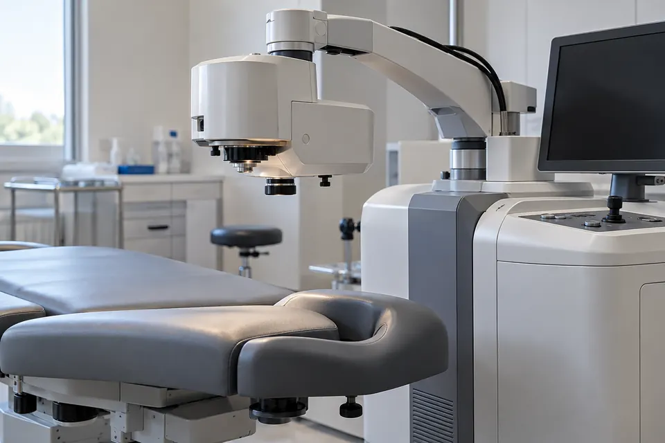
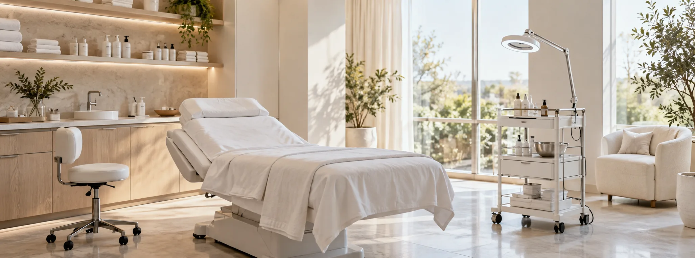
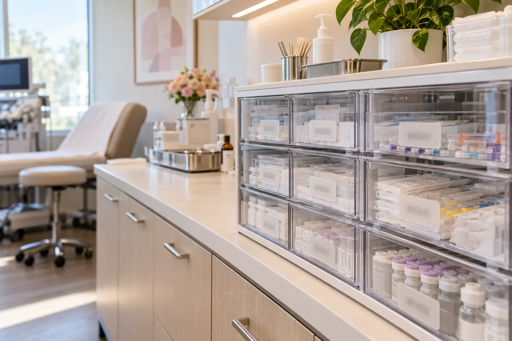
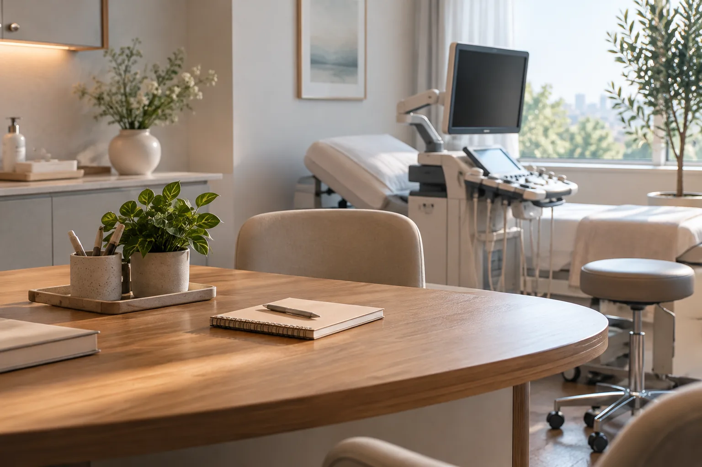

임신 성공 사례
누비아에서 진료받은 분들의 소식을 전합니다
[인공수정 / 1개월]
부부관계
치료를 시작할 때에는 결과를 미리 알 수 없어 걱정이 많으셨다고 합니다. 첫 시도에서 임신을 확인한 뒤에도 초음파로 경과를 살필 때마다 긴장하셨던 부부와 마지막 진료에서 반가운 인사를 나누었습니다.
2023-11-15
[시험관아기 시술 / 0.03]
기쁜 소식을 나눈 날
정액검사에서 관찰되는 정자가 적어 부부와 확보 방법을 먼저 상의했습니다. 채취한 검체를 연구실에서 확인하고 수정과 배양의 경과를 하나씩 설명드린 뒤 임신 소식을 전할 수 있었습니다.
2023-08-08
[인공수정 / 2개월]
시험관 치료 뒤 인공수정으로 만난 임신
이전 시험관 시술에서 임신되지 않았던 부부가 검사 기록을 가지고 오셨습니다. 난관 상태와 정액검사 결과를 다시 검토하고 인공수정을 시도할 조건인지 상의한 뒤 치료 방법을 정했습니다.
2023-03-18

[해동배아이식 / 4년]
너무 믿지 마요.
뚜렷한 원인을 찾기 어려운 상태에서 여러 차례 치료를 받으셨습니다. 이전 자극 방법과 배양 기록, 이식 당시의 내막 상태를 비교하며 다음 주기의 계획을 상의했고 기다리던 소식을 들었습니다.
2022-12-29

[해동배아이식 / 2년]
마지막 카드
배아 이식을 준비하는 동안 내막 상태를 관찰하며 날짜를 조율한 사례입니다. 체격만으로 상태를 판단하지 않고 초음파와 호르몬 소견을 함께 확인했으며, 부부에게 변화 양상을 설명드렸습니다.
2022-06-08
[시험관아기 시술 / 2년]
다시 인사를 전해 주신 부부
진료를 마친 뒤 소식을 전해 주신 부부가 있었습니다. 치료 중 어떤 설명이 도움이 됐는지, 결과를 기다리는 시간이 어떠했는지를 들으며 진료실에서 나눈 이야기를 다시 돌아보았습니다.
2022-01-13
[시험관아기 시술 / 10개월]
자극 주기와 동결 이식을 검토한 과정
임신을 서둘러 준비하고 싶어 하는 부부와 첫 상담을 진행했습니다. 두 분의 건강 상태와 생활 일정, 검사에 필요한 방문 날짜를 함께 정하고 주기별 결과를 확인하며 치료를 이어갔습니다.
2021-11-10

[시험관아기 시술 / 4년]
두 아이의 소식을 함께 전합니다
첫 아이를 준비할 때 방문하셨던 부부가 둘째를 계획하며 다시 찾아오셨습니다. 지난 진료 이후 달라진 건강 상태와 임신 경과를 확인하고 필요한 검사를 다시 상의한 뒤 치료를 시작했습니다.
2021-09-29
[시험관아기 시술 / 9개월]
오랜 기다림 뒤 임신 소식을 들었습니다
둘째 임신을 준비하는 과정에서 소식이 늦어져 오신 분의 이야기입니다. 이전에 임신한 경험이 있더라도 현재 검사가 필요할 수 있다는 점을 설명하고 부부의 검사 결과를 함께 살펴보았습니다.
2021-08-11

[시험관아기 시술 / 6개월]
치료의 선택지를 다시 살펴본 상담
진료 결과를 기록할 때에는 임신 확인과 이후의 경과를 구분해 살펴봅니다. 같은 치료명이라도 연령과 배아 상태, 이전 시술 이력이 다르므로 개별 사례를 다른 분의 결과처럼 받아들이지 않도록 설명드립니다.
2021-07-15
[시험관아기 시술 / 6개월]
여러 번의 진료를 함께 이어간 이야기
자궁내막종으로 한쪽 난소의 수술을 받은 뒤 임신을 준비하신 분입니다. 남은 난소의 반응과 확보한 배아의 상태를 확인하고 이식 계획을 세웠으며 여러 방문 끝에 임신을 확인했습니다.
2021-06-16
[시험관아기 시술 / 3년]
채취 방법을 상의한 뒤 이어진 치료
난자 채취 전에 초음파로 난소의 위치와 접근 경로를 살펴본 사례입니다. 일반적인 경로로 채취하기 어려운 조건을 확인해 다른 접근 방법의 이점과 위험을 설명하고 부부와 시술 여부를 상의했습니다.
2021-06-10